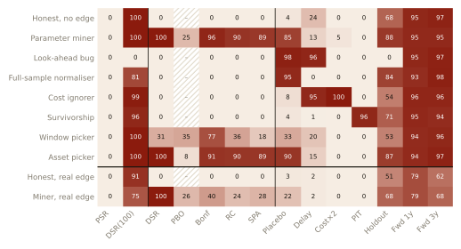
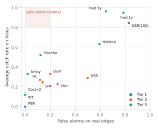
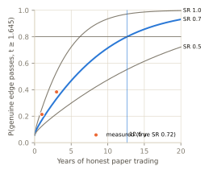
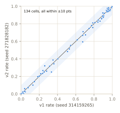

A backtest that looks excellent can be wrong in ways that leave no trace in its returns. A researcher may have tried 120 variants and kept the best, computed a signal with information not available at trade time, ignored trading costs, or tested only on assets that survived. Each failure has attracted statistical remedies, but they are usually evaluated on the failure they were designed for, with returns that are assumed to be independent and normal. A practitioner auditing a claim needs to know three things: which test catches which flaw, how often each test wrongly rejects a genuine edge, and how much access to the research process each test needs.
Real data cannot answer these questions because the true edge of a strategy is never observed. We therefore simulate markets in which it is known by construction, plant flaws in complete research workflows, and score every audit against an oracle. The contributions are:
Data-snooping corrections compare the best of many strategies with a bootstrap null: White's Reality Check [1] and Hansen's studentised SPA test [2], both using the stationary bootstrap [3]. Harvey, Liu and Zhu [4] argue for multiple-testing adjustments of t-statistics in finance. Bailey and López de Prado introduced the Probabilistic Sharpe Ratio [5] and the Deflated Sharpe Ratio [6], which builds in the expected maximum Sharpe of many trials, and, with Borwein and Zhu, the Probability of Backtest Overfitting estimated by combinatorially symmetric cross-validation [7]. Lo [8] derives the sampling distribution of Sharpe ratios. Most recently, Nikolopoulos [9] proposes falsification audits that re-run complete workflows in zero-predictability environments, close in spirit to our placebo audit. Our contribution is not a new test but an evaluation: all of these are scored against ground truth, across distinct failure classes and access levels.
Each market is a panel of daily overnight and intraday simple returns, with GARCH(1,1) volatility [10] and Student-t (ν = 5) shocks, so tests cannot rely on normality. There are four kinds:
Trading costs are 2 bps per unit of turnover.
The ten workflows are listed in Figure 1. Each turns a dataset into a claim: the selected rule, its reported daily returns, and every trial it ran. Only claims with t ≥ 2 are audited, because flawed research is shown only when it looks good. The oracle runs the claimed rule honestly on 256 fresh 10-year paths (about 2,300 years). Claims with a true Sharpe ≤ 0.05 are labelled FAKE and those ≥ 0.20 REAL. Rejecting a FAKE claim is a catch; rejecting a REAL one is a false alarm.
Each tier receives only the information its access allows, and this is enforced in code.
Thresholds were fixed before any run: α = 5%, PBO > 0.5, DSR < 0.95, and re-run attacks reject at t < 1.645.
The code has 91 automated tests. Causality tests show that the honest engine never uses future data and that the two planted look-ahead bugs really do. Size tests confirm that the Reality Check, SPA and the placebo reject at most about 5% of claims when there is no edge. During development the SPA, studentised with a block-bootstrap variance, was oversized (11.7% at α = 5%), so it was switched to the sample standard deviation (6.3%). Debugging used a separate seed. The final configuration and code were hashed before a single locked run with 300 claims per workflow, drawn from 30,799 simulated markets.



Two audits were designed after seeing the v1 results, and hypotheses were written down before the run. dsr_eff is a DSR whose bar is the expected maximum Sharpe of Neff independent zero-edge trials under the null variance 1/T. Neff is the participation ratio (Σλ)²/Σλ² of the eigenvalues of the trials' correlation matrix. full_history re-runs the claimed rule from the earliest available date. Both were tested on a fresh seed: 3,000 new claims from 35,312 markets. During development, full_history caught only 46% of window-pickers on the development seed. Neither audit was changed after that.
| Hypothesis | Result | Verdict |
|---|---|---|
| H1: at least 90% of v1 cells replicate within 10 points | 134 of 134 (largest difference 8 points) | PASS |
H2: dsr_eff catches ≥ 80% of miner and asset-picker fakes with ≤ 20% false alarms | asset picker 99.3%, miner 70.3%; false alarms 7.3% (14.7% on real mined edges, against 100% for the DSR) | FAIL |
H3: full_history catches ≥ 80% of window-pickers with ≤ 5% false alarms | 50.0% caught, 0% false alarms | FAIL |

Replication was complete. dsr_eff repairs the DSR's main defect, cutting false alarms on genuine mined edges from 100% to 15%, but on miners it is weaker than the Reality Check (87%). full_history never rejected a real edge but caught only half the window-pickers. The best start date usually covers most of the history, so the lucky stretch is still inside the full backtest. Window picking remains the flaw that no usable audit reliably catches.
The same workflows and audits were run on 20 liquid US ETFs, using Yahoo Finance data adjusted for splits and dividends. The research window was 2005–2018, and the "future" was 2019 to October 2026. There is no oracle here: the truth is each claimed rule's honest performance in the future, a single draw per workflow. Equal-weight buy-and-hold had a Sharpe of 0.59, then 0.90.
| Workflow | Rule picked | Claimed SR (t) | Audits rejecting | Future SR |
|---|
Look-ahead produced the best-looking backtest. Only the placebo and delay attacks rejected it, and it lost money afterwards, as the simulation predicts. The miner's long-only trend filter kept working (0.70), but it trailed buy-and-hold, so its "edge" was largely market exposure. The placebo rejects it for exactly that reason: sign-randomised data has no upward drift.
The practical lesson is that no single test is sufficient. An auditor should ask for every trial and re-run the pipeline with a delay, double costs, the point-in-time universe and placebo data. Statistics computed on returns alone cannot detect implementation flaws, and new data is the only defence against honest luck, at a rate of years per tenth of a Sharpe ratio.
The limitations are as follows:
Python 3.14 with numpy and scipy. The repository contains the code, every audited claim from both locked runs, the oracle tables and a decision log. Hashes: v1 config b39faa28… and code a8897be1…; v2 config d35a77ab… and code be2b188f…. To reproduce: python -m pytest -m "slow or not slow", then python -m qrt report results/final. An interactive version is at trader213132.github.io/quant-red-team.
[1] White, H. (2000). A reality check for data snooping. Econometrica, 68(5), 1097–1126.
[2] Hansen, P. R. (2005). A test for superior predictive ability. Journal of Business & Economic Statistics, 23(4), 365–380.
[3] Politis, D. N., & Romano, J. P. (1994). The stationary bootstrap. Journal of the American Statistical Association, 89(428), 1303–1313.
[4] Harvey, C. R., Liu, Y., & Zhu, H. (2016). …and the cross-section of expected returns. Review of Financial Studies, 29(1), 5–68.
[5] Bailey, D. H., & López de Prado, M. (2012). The Sharpe ratio efficient frontier. Journal of Risk, 15(2), 3–44.
[6] Bailey, D. H., & López de Prado, M. (2014). The deflated Sharpe ratio: correcting for selection bias, backtest overfitting and non-normality. Journal of Portfolio Management, 40(5), 94–107.
[7] Bailey, D. H., Borwein, J. M., López de Prado, M., & Zhu, Q. J. (2017). The probability of backtest overfitting. Journal of Computational Finance, 20(4), 39–69.
[8] Lo, A. W. (2002). The statistics of Sharpe ratios. Financial Analysts Journal, 58(4), 36–52.
[9] Nikolopoulos, S. D. (2026). Spurious predictability in financial machine learning. arXiv:2604.15531.
[10] Bollerslev, T. (1986). Generalized autoregressive conditional heteroskedasticity. Journal of Econometrics, 31(3), 307–327.